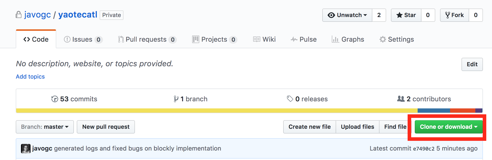

Compilers Class Project
Elda Quiroga
Tec de Monterrey | Computer Science | Spring 2017
Currently there’s a huge demand for programmers, but it’s still very hard for young boys and girls to get involved with it. Through this project, we want to create an easy way for people of all ages to learn and experience the fun of programming, with the hope that when they’re faced with the decision of what major to choose, they pick one related to computer science.
Our principal objective is to develop a programming language that can help people who want to start learning to program. Our language needs to be easy to understand, needs to cover the basic concepts of programming so that the user can understand the simple concepts of programming. To help the people understand better how programming works we are gonna use a tool known as “Blockly” and utilize “PLY” which is an implementation of lex and yacc that uses Python. This tool will help us do the syntactic and lexical analysis of our compiler.
In order to fulfill our purpose to create a language that will allow children to familiarize with programming, we chose to use a tool created by google called Blockly. We used this tool, to create a grafic input, that's very easy to understand, and then translate that code, into Yaotecatl source code.
The children should visit placeholder, in this website they will find all the blocks available for them, and start creating some basic code. For more examples on how to use the blockly site, keep reading below.
The first thing you need to do is go to our github page and clone or download our project
 Once you download it, save into a directory you are confident to use, and navigate to it on the terminal.
Inside the directory, you'll find the Yaotectal.py file, this file is the heart of the project.
To run a .yaotectal file, you'll need to run this command on the terminal (while on the project's directory): python Yaotecatl.py "filename"
"Blockly | Google Developers." Google Developers. Web. 11 Feb. 2017. https://developers.google.com/blockly/
Beazley, David M. "PLY (Python Lex-Yacc)." N.p., n.d. Web. 11 Feb. 2017. http://www.dabeaz.com/ply/
Gunther Rademache. "Railroad Diagram Generator." Railroad Diagram Generator. N.p., n.d. Web. 11 Feb. 2017. http://www.bottlecaps.de/rr/ui.